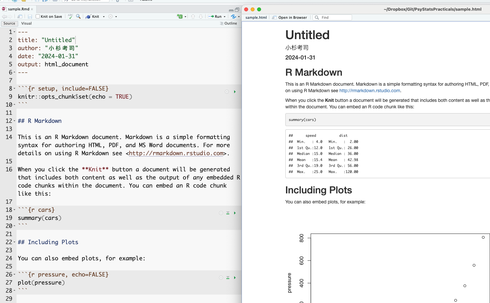
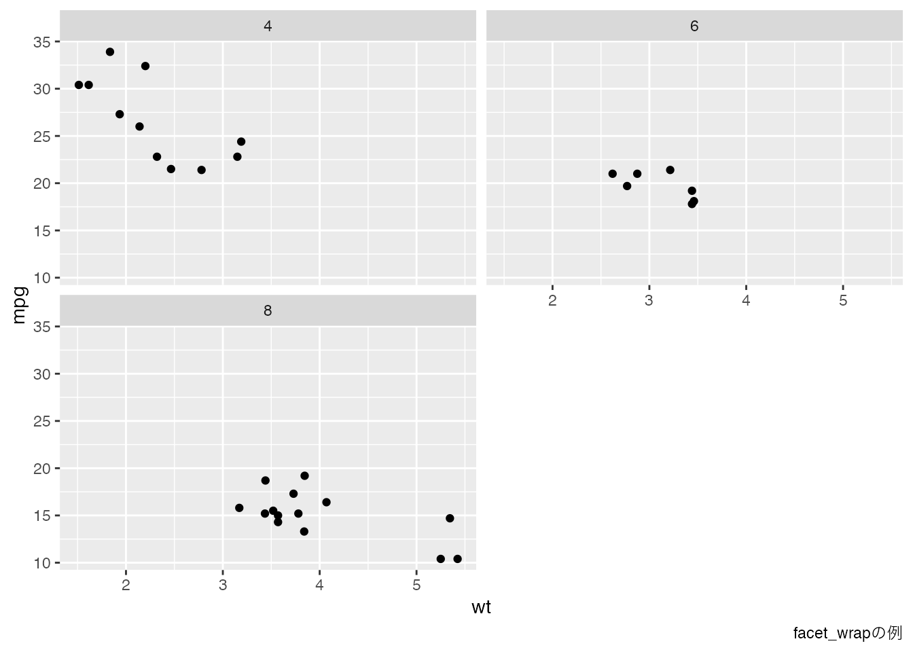

Code
plot(iris$Sepal.Length, iris$Sepal.Width,
main = "Example of Scatter Plot",
xlab = "Sepal.Length",
ylab = "Sepal.Width"
)
今回はRStudioを使った文書作成法について解説する。皆さんは、これまで作成と言えば、基本的にMicrosoft Wordのような文書作成ソフトを使ってきたものと思う。また，統計解析といえばR(やその他のソフト)，図表の作成はExcelといったように，用途ごとに異なるアプリケーションを活用するのが一般的であろう。
このやり方は，統計解析の数値結果を表計算ソフトに，そこで作った図表を文書作成ソフトにコピー＆ペーストする，という転記作業が何度も発生する。ここで転記ミス・貼り付け間違いが生じると，当然ながら出来上がる文書は間違ったものになる。こうした転記ミスのことを「コピペ汚染」と呼ぶこともある。
問題はこの環境をまたぐ作業にあるわけで，計算・作図・文書が一つの環境で済めばこうした問題が起こらない。これを解決するのがR markdonやQuartoという書式・ソフトウェアなのである。
Rmarkdownのmarkdownとは書式の一種である。マークアップ言語と呼ばれる書き方の一種で，なかでもRとの連携に特化したのがRmarkdownである。マークアップ言語とは，言語の中に専門の記号を埋め込み，その書式に対応した読み込みアプリで，表示の際に書式を整える方式のことを指す。有名なマークアップ言語としては，数式に特化した LaTeX や，インターネットウェブサイトで用いられている HTML などがある。Markdownは，特に読みやすさと書きやすさを重視した軽量なマークアップ言語で，テキストエディタで直接編集できる形式である。
Rmarkdownはmarkdownの書式を踏襲しつつ，Rでの実行結果を文中に埋め込むコマンドを有している。Rのコマンドで計算したり図表を作成しつつ，その結果を埋め込む場所をマークアップ言語で指定する。最終的に文書を閲覧する場合は，マークアップ言語を出力ファイルに変換する(コンパイルする，ニットするという)必要があり，その時Rでの計算が実行される。コンパイルのたびに計算されるので，同じコードでも乱数を使ったコードを書いていたり，一部読み込みファイルを変更するだけで，出力される結果は変わる。しかしコピペ汚染のように，間違った値・図表が含まれるものではないので，研究の再現性にも一役買うことになる。再現可能な文書の作成について、詳しくは 高橋 (2018) を参考にすると良い。
QuartoはRmarkdownをさらに拡張させたもので，RStudioを提供しているPosit社が今もっとも注力しているソフトのひとつである。RmarkdownはRとmarkdownの連携であったが，QuartoはRだけでなく，PythonやJuliaといった他の言語にも対応しているし，これら複数の計算言語の混在も許す。すなわち，一部はRで計算し，その結果をPythonで検算してJuliaで描画する，といったことを一枚のファイルで書き込むことも可能である。
なおこの授業資料もQuartoで作成している。このようにQuartoはプレゼンテーション資料やウェブサイトも作成できるし，出力形式もウェブサイトだけでなくPDFやePUB(電子書籍の形式)にすることが可能である。なおこの授業の資料もウェブサイトと同時にPDF形式と，ePUB形式で出力されている。Quartoについて専門の解説書はまだないが，インターネットに充実したドキュメントがあるので検索するといいだろう。まだ新しい技術なので，公式を第一に参照すると良い。
RmarkdownはRStudioとの相性がよく，RStudioのFile > New FileからR Markdownを選ぶとRmarkdownファイルがサンプルとともに作成される。作成時に文書のタイトル，著者名，作成日時や出力フォーマットが指定できるサブウィンドゥが開き，作成するとサンプルコードが含まれたR markdownファイルが表示されるだろう。
Quartoも同様に，RStudioのFile > New FileからQuarto Documentを選ぶことで新しいファイル画面が開く。なおRmarkdownファイルの拡張子はRmdとすることが一般的であり，QuartoはQmdとすることが一般的である。もっとも，QuartoはRStudio以外のエディタから利用することも考えられていて，例えばVS Codeなどの一般的なエディタで作成し，コマンドライン経由でコンパイルすることも可能である。
Rmarkdown，Quartoともに，ファイルの冒頭に4つのハイフンで囲まれた領域が見て取れるだろう。これはYAMLヘッダ(YAMLはYet Another Markup Languageの略。ここはまだマークアップ領域じゃないよということ)と呼ばれる，文書全体に対する設定をする領域のことである。
この領域を一瞥すると，タイトルや著者名，出力形式などが記載されていることが見て取れる。YAMLヘッダはインデントに敏感で，また正しくない記述が含まれているとエラーになって出力ファイルが作られないことが少なくないため，ここを手動で書き換えるときは注意が必要である。とはいえ，ここを自在に書き換えることができるようになると，様々な応用が効くので興味があるものは調べて色々トライしてもらいたい。
さて，Rmd/Qmdのファイル上部にKnitあるいはRenderと書かれたボタンがあるだろう。これをクリックすると，表示用ファイルへの変換が実行される。1 Rmarkdownの場合は，すでにサンプルコードが含まれているので，数値および図表のはいったHTMLドキュメントが表示されるだろう。以下はこのサンプルコードを例に説明するため，Rmarkdownとそのコンパイル(knit))を一度試してもらいたい。その上で，元のRmdファイルと出来上がったファイルとの対応関係を確認してみよう。

おおよそ，何がどのように変換されているかの対応が推察できるだろう。 出力ファイルの冒頭には，YAMLで設定したタイトル，著者名，日付などが表示されているし，#の印がついていた一行は見出しとして強調されている。
特に注目したいのが，元のファイルで3つのクォーテーションで囲まれた灰色の領域である。この領域のことを特にチャンクといい，ここに書かれたRスクリプトが変換時に実行され，結果として出力される。出力ファイルをみると，summary(cars) というチャンクで指定された命令文があり，その結果(carsというデータセットの要約)が出力されているのが見て取れる。繰り返しになるが，ポイントは原稿ファイルには計算を指示するスクリプトが書かれているだけで，出力結果を書いていないことにある。原稿は指示だけなのである。こうすることで，コピー＆ペーストのミスがなくなるし，同じRmd/Qmd原稿とデータを持っていれば，ことなるPC上でも同じ出力が得られる。環境を統合することで，ミスの防止と再現可能性に貢献しているのがわかるだろう。
今回はcarsというRがデフォルトでもっているサンプルデータの例なので，どの環境でも同じ結果が出力されている。しかしもちろん，個別のデータファイルであっても，同じファイルで同じ読み込み方，同じ加工をしていれば，環境が違っても追跡可能である。注意して欲しいのは，コンパイルするときは新しい環境から行われるという点ある。すなわち，原稿ファイルにないオブジェクトの利用はできないのである。これは再現性を担保するという意味では当然のことで，「事前に別途処理しておいたデータ」から分析を始められても，その事前処理が適切だったかどうかがチェックできないからである。Rmd/Qmdファイルと，CSVファイルなどの素データが共有されていれば再現できる，という利点を活かすため，データハンドリングを含めた前処理も全てチャンクに書き込み，新しい環境で最初からトレースできるようにする必要がある。不便に感じるところもあるかもしれないが，科学的営みとして重要な手続きであることを理解してもらいたい。2
RStudiでは，ビジュアルモードやアウトライン表示，チャンク挿入ボタンやチャンクごとの実行・設定などRmd/Qmdファイルの編集に便利な機能も複数用意されているので， 高橋 (2018) などを参考にいろいろ試してみるといいだろう。
以下では，マークダウン記法について基本的な利用法を解説する。
すでに見たように，マークダウンでは#記号で見出しを作ることができる。#の数が見出しレベルに対応し，#はトップレベル，本でいうところの「章,chapter」，HTMLでいうところのH1に相当する。#記号の後ろに半角スペースが必要なことに注意されたし。以下，##で「節,section」あるいはH2，###で小節(subsection,H3)，####で小小節(subsubsection,H4)…と続く。
心理学を始め，科学論文の書き方としての「パラグラフライティング」を既にみしっていることだろう。文章をセクション，サブセクション，パラグラフ，センテンスのように階層的に分割し，それぞれの区分が4つの下位区分を含むような文章構造である。心理学の場合は特に「問題，方法，結果，考察」の4セクションで一論文が構成されるのが基本である。こうしたアウトラインを意識した書き方は読み手にも優しく，マークダウンの記法ではそれが自然と実装できるようになっている。
これとは別に，一部を太字や斜体で強調したいこともあるだろう。そのような場合はアスタリスクを1つ，あるいは2つつけて強調したり強調したりできる。
文中に図表を挿入したいこともあるだろう。表の挿入は，マークダウン独自の記法があり，縦棒|やハイフン-を駆使して以下のように表記する。
| Header 1 | Header 2 | Header 3 |
| -------- | -------- | -------- |
| Row 1 | Data 1 | Data 2 |
| Row 2 | Data 3 | Data 4 |Rのコードの中には分析結果をマークダウン形式で出力してくれる関数もあるし，表計算ソフトなどでできた表があるなら，chatGPTなど生成AIを利用するとすぐに書式変換してくれるので，そういったツールを活用すると良い。
図の挿入は，マークダウンでは図のファイルへのリンクと考えると良い。次のように，大括弧で括った文字がキャプション，つづく小括弧で括ったものが図へのリンクとなる。実際に表示されるときは図が示される。
同様に，ウェブサイトへのリンクなども，[表示名](リンク先)の書式で対応できる。
並列的に箇条書きを示したい場合は，プラスあるいはマイナスでリストアップする。注意すべきは，リストの前後に改行を入れておくべきことである。
ここまで前の文
+ list item 1
+ list item 2
+ list item 3
- sub item 1
- sub item 2
ここから次の文既に述べたように，チャンク(chunk)と呼ばれる領域は実行されるコードを記載するところである。チャンクはまず，バックスラッシュ3つ繋げることでコードブロックであることを示し，次に rと書くことで計算エンジンがRであることを明示する。ここにJuiliaやPythonなど他の計算エンジンを指定することも可能である。
可能であれば，チャンク名をつけておくと良い。次の例は，チャンク名として「chunksample」を与えたものである。チャンク名をつけておくと，RStudioでは見出しジャンプをつかって移動することもできるので，編集時に便利である。
```{r chunksample,echo = FALSE}
summary(cars)
```
さらに，echo = FALSEのようにチャンクオプションを指定することができる。echo=FALSEは入力したスクリプトを表示せず，結果だけにするオプションである。そのほか「計算結果を含めない」「表示せずに計算は実行する」等様々な指定が可能である。
なおQuartoではこのチャンクオプションを次のように書くこともできる。
```{r}
#| echo: FALSE
#| include: FALSE
summary(cars)
```
再現可能な文書という観点から，図表もスクリプトによる記述で表現することは重要である。
データはまず可視化するものと心がけよ。可視化は，数値の羅列あるいはまとめられた統計量では把握しきれない多くの情報を提供し，潜在的な関係性を直観的に見つけ出せる可能性がある。なので，取得したあらゆるデータはまず可視化するもの，と思っておいて間違いはない。大事なことなので二度言いました。可視化の重要性については心理学の知見にも触れている キーラン・ヒーリー ([2018] 2021) も参考にしてほしい。
さて，Rには基本的な作図環境も整っており，plotという関数に引数として，x軸，y軸に相当する変数を与えるだけで，簡単に散布図を書いてくれる。
plot(iris$Sepal.Length, iris$Sepal.Width,
main = "Example of Scatter Plot",
xlab = "Sepal.Length",
ylab = "Sepal.Width"
)
この関数のオプションとして，タイトルを与えたり，軸に名前を与えたりできる。またプロットされるピンの形，描画色，背景色など様々な操作が可能である。特段のパッケージを必要とせずとも，基本的な描画機能は備えていると言えるだろう。
ここでは，tidyverseに含まれる描画専用のパッケージである，ggplot2 パッケージを用いた描画を学ぶ。Rの基本描画関数でもかなりのことができるのだが，このggplot2パッケージをもちいた図の方が美しく，直観的に操作できる。というのもggplotのggとはThe Grammar of Graphics(描画の文法)のことであり，このことが示すようにロジカルに図版を制御できるからである。ggplot2の形で記述された図版のスクリプトは可読性が高く，視覚的にも美しいため，多くの文献で利用されている。
ggplot2 パッケージの提供する描画環境の特徴は，レイア(Layer)の概念である。図版は複数のレイアの積み重ねとして表現される。まず土台となるキャンバスがあり，そこにデータセット，幾何学的オブジェクト(点，線，バーなど)，エステティックマッピング(色，形，サイズなど)，凡例やキャプションを重ねていく，という発想である。そして図版全体を通したテーマを手強することで，カラーパレットの統一などの仕上げをすれば，すぐにでも論文投稿可能なレベルの図版を描くことができる。
以下にggplot2における描画のサンプルを示す。サンプルデータmtcarsを用いた。
pacman::p_load(ggplot2)
ggplot(data = mtcars, aes(x = wt, y = mpg)) +
geom_point() +
geom_smooth(method = "lm", formula = "y ~ x") +
labs(title = "車の重量と燃費の関係", x = "重量", y = "燃費")まずは出来上がる図版の美しさと，コードのイメージを把握してもらいたい。 最初のpacman::p_load(ggplot2)はパッケージを読み込んでいるところである。今回は明示的にggplot2を読み込んでいるが，tidyverseパッケージを読み込むと同時に読み込まれているので，Rのスクリプトの冒頭にpacman::p_load(tidyverse)と書く癖をつけておけば必要ない。
続いてggplotの関数が4行にわたって書いてあるが，それぞれが+の記号で繋がれていることがわかるだろう。これがレイアを重ねるという作業に相当する。まずは，図を書くためのキャンバスを用意し，その上にいろいろ重ねていくのである。
次のコードは，キャンバスだけを描画した例である。
g <- ggplot()
print(g)
ここではg というオブジェクトをggplot関数でつくり，それを表示させた。最初はこのようにプレーンなキャンバスだが，ここに次々と上書きしていくことになる。
幾何学的オブジェクト(geometric object) とは，データの表現方法の指定であり，ggplotには様々なパターンが用意されている。以下に一例を挙げる。
geom_point(): 散布図で使用され、データ点を個々の点としてプロットする。geom_line(): 折れ線グラフで使用され、データ点を線で結んでプロットする。時系列データなどによく使われる。geom_bar(): 棒グラフで使用され、カテゴリごとの量を棒で表示する。データの集計（カウントや合計など）に適している。geom_histogram(): ヒストグラムで使用され、連続データの分布を棒で表示する。データの分布を理解するのに役立つ。geom_boxplot(): 箱ひげ図で使用され、データの分布（中央値、四分位数、外れ値など）を要約して表示する。geom_smooth(): 平滑化曲線を追加し、データのトレンドやパターンを可視化する。線形回帰やローパスフィルタなどの方法が使われる。これらの幾何学的オブジェクトに，データおよび軸との対応を指定するなどして描画する。次に挙げるのはgeom_point による点描画，つまり散布図である。
ggplot() +
geom_point(data = mtcars, mapping = aes(x = disp, y = wt))一行目でキャンバスを用意し，そこにgeom_pointで点を打つようにしている。 このとき，データはmtcarsであり，x軸に変数dispを，y軸に変数wtをマッピングしている。マッピング関数のaesはaesthetic mappingsの意味で，データによって変わる値(x座標，y座標，色，サイズ，透明度など)を指定することができる。
レイアは次々と重ねることができる。以下の例を見てみよう。
g <- ggplot()
g1 <- g + geom_point(data = mtcars, mapping = aes(x = disp, y = wt))
g2 <- g1 + geom_line(data = mtcars, mapping = aes(x = disp, y = wt))
print(g2)重ねることを強調するために，g オブジェクトを次々作るようにしたが，もちろん1つのオブジェクトでまとめて書いてもいいし，gオブジェクトとして保管せずとも，最初の例のように直接出力することもできる。また，ここでは点描画オブジェクトに線描画オブジェクトを重ねているが，データやマッピングは全く同じである。異なるデータを一枚のキャンバスに書く場合は，このように幾何学オブジェクトごとの指定が可能であるが，図版は得てして一枚のキャンバスに一種類のデータになりがちである。そのような場合は，以下に示すようにキャンバスの段階から基本となるデータセットとマッピングを与えることが可能である。
ggplot(data = mtcars, mapping = aes(x = disp, y = wt)) +
geom_point() +
geom_line()また，この用例の場合ggplot関数の第一引数はデータセットなので，パイプ演算子で渡すことができる。
mtcars %>%
ggplot(mapping = aes(x = disp, y = wt)) +
geom_point() +
geom_line()パイプ演算子を使うことで，素データをハンドリングし，必要な形に整えて可視化する，という流れがスクリプト上で読むように表現できるようになる。慣れてくると，データセットから可視化したい要素を特定し，最終的にどのように成形すればggplotに渡しやすくなるかを想像して加工していくようになる。そのためには到達目標となる図版のイメージを頭に描き，その図のx軸，y軸は何で，どのような幾何学オブジェクトが上に乗っているのか，といったように図版のリバースエンジニアリング，あるいは図版の作成手順の書き下しができる必要がある。たとえるなら，食べたい料理に必要な材料を集め，大まかな手順(下ごしらえからの調理)を組み立てられるかどうか，である。実際にレシピに書き起こす際は生成AIの力を借りると良いが，その際も最終的な目標と，全体的な設計方針から指示し，微調整を追加していくように指示すると効率的である。
以下に，データハンドリングと描画の一例を示す。各ステップにコメントをつけたので，文章を読むように加工と描画の流れを確認し，出力結果と照らし合わせてみよう。
# mtcarsデータセットを使用
mtcars %>%
# 変数選択
select(mpg, cyl, wt, am) %>%
mutate(
# 変数am,cylをFactor型に変換
am = factor(am, labels = c("automatic", "manual")),
cyl = factor(cyl)
) %>%
# 水準ごとにグループ化
group_by(am, cyl) %>%
summarise(
M = mean(mpg), # 各グループの平均燃費（M）を計算
SD = sd(mpg), # 各グループの燃費の標準偏差（SD）を計算
.groups = "drop" # summarise後の自動的なグルーピングを解除
) %>%
# x軸にトランスミッションの種類、y軸に平均燃費，塗りつぶしの色はcyl
ggplot(aes(x = am, y = M, fill = cyl)) +
# 横並びの棒グラフ
geom_bar(stat = "identity", position = "dodge") +
# ±1SDのエラーバーを追加
geom_errorbar(
# エラーバーのマッピング
aes(ymin = M - SD, ymax = M + SD),
# エラーバーの位置を棒グラフに合わせる
position = position_dodge(width = 0.9),
width = 0.25 # エラーバーの幅を設定
)繰り返しになるが，このコードは慣れてくるまでいきなり書けるものではない。重要なのは「出力結果をイメージ」することと，それを「要素に分解」，「手順に沿って並べる」ことができるかどうかである。3
最後に，いくつかの描画テクニックを述べておく。これらについては，必要な時に随時ウェブ上で検索したり，生成AIに尋ねることでも良いが，このような方法がある，という基礎知識を持っておくことも重要だろう。なお描画について詳しくは 松村 et al. (2021) の4章を参照すると良い。
複数のプロットを一枚のパネルに配置したい，ということがあるかもしれない。先ほどのmtcarsデータの例でいえば，am変数にオートマチック車かマニュアル車かの2水準があるが，このようなサブグループごとに図を分割したいという場合である。
このような時には，facet_wrapやfacet_gridという関数が便利である。前者はある変数について，後者は2つの変数について図を分割する。
mtcars %>%
# 重さwtと燃費mpgの散布図
ggplot(aes(x = wt, y = mpg)) +
geom_point() +
# シリンダ数cylで分割
facet_wrap(~cyl, nrow = 2) +
# タイトルをつける
labs(caption = "facet_wrapの例")
mtcars %>%
ggplot(aes(x = wt, y = mpg)) +
geom_point() +
# シリンダ数cylとギア数gearで分割
facet_grid(cyl ~ gear) +
# キャプションをつける
labs(caption = "facet_gridの例")
一枚の図をサブグループに分けるのではなく，異なる図を一枚の図として赤痛いこともあるかもしれない。そのような場合は，patchworkパッケージを使うと便利である。
pacman::p_load(patchwork)
# 散布図の作成
g1 <- ggplot(mtcars, aes(x = wt, y = mpg)) +
geom_point() +
# 散布図のタイトルとサブタイトル
ggtitle("Scatter Plot", "MPG vs Weight")
# 棒グラフの作成
g2 <- ggplot(mtcars, aes(x = factor(cyl), y = mpg)) +
geom_bar(stat = "identity") +
# 棒グラフのタイトルとサブタイトル
ggtitle("Bar Chart", "Average MPG by Cylinder")
# patchworkを使用して2つのグラフを組み合わせる
combined_plot <- g1 + g2 +
plot_annotation(
title = "Combined Plots",
subtitle = "Scatter and Bar Charts"
)
# プロットを表示
print(combined_plot)
RmdやQuartoで文書を作るときは，図が自動的に生成されるので問題ないが，図だけ別のファイルとして利用したい，保存したいということがあるかもしれない。その時はggsave関数でggplotオブジェクトを保存するとよい。
# 散布図を作成
p <- ggplot(mtcars, aes(x = wt, y = mpg)) +
geom_point()
ggsave(
filename = "my_plot.png", # 保存するファイル名。
plot = p, # 保存するプロットオブジェクト。
device = "png", # 保存するファイル形式。
path = "path/to/directory", # ファイルを保存するディレクトリのパス
scale = 1, # グラフィックスの拡大縮小比率
width = 5, # 保存するプロットの幅（インチ）
height = 5, # 保存するプロットの高さ（インチ）
dpi = 300, # 解像度（DPI: dots per inch）
)レポートや論文などの提出次の条件として，図版をモノクロで表現しなければならないことがあるかもしれない。ggplotでは自動的に配色されるが，その背後ではデフォルトの絵の具セット(パレットという) が選択されているからである。このセットを変更すると，同じプロットでも異なる配色で出力される。モノクロ(グレイスケール)で出力したい時のパレットはGraysである。
# グレースケールのプロット
p1 <- ggplot(mtcars, aes(x = wt, y = mpg, color = factor(cyl))) +
geom_point(size = 3) +
scale_fill_brewer(palette = "Greys") +
ggtitle("Gray Palette")
# カラーパレットが多く含まれているパッケージの利用
pacman::p_load(RColorBrewer)
# 色覚特性を考慮したカラーパレット
p2 <- ggplot(mtcars, aes(x = wt, y = mpg, color = factor(cyl))) +
geom_point(size = 3) +
scale_color_brewer(palette = "Set2") + # 色覚特性を考慮したカラーパレット
ggtitle("Palette for Color Blind")
# 両方のプロットを並べて表示
combined_plot <- p1 + p2 + plot_layout(ncol = 2)
print(combined_plot)
また，ggplot2のデフォルト設定では，背景色が灰色になっている。これは全体のテーマとしてtheme_gray()が設定されているからである。しかし日本心理学会の執筆・投稿の手引きに記載されているグラフの例を見ると，背景は白色とされている。このような設定に変更するためには，theme_classic()やtheme_bw()を用いる。
p2 + theme_classic()このほかにも，様々な描画上の工夫は考えられる。目標となる図版のレシピを書き起こせるように，要素に分解ができれば，殆どのケースにおいて問題を解決することができるだろう。
Baseball.csvを読み込み、2020年度のデータセットに限定し、以下の操作に必要であれば変数の変換を済ませたデータセット、dat.tbを用意してください。dat.tbの身長変数を使って、ヒストグラムを描いてください。この時、テーマをtheme_classicにしてください。dat.tbの身長変数と体重変数を使って、散布図を描いてください。この時、テーマをtheme_bwにしてください。Set3に変えてください。dat.tbの身長と体重についての散布図を、チームごとに分割してください。geom_smooth()でスムーズな線を引いてください。特にmethodを指定する必要はありません。geom_smooth()で直線関数を引いてください。method="lm"と指定するといいでしょう。dat.tb2を作るか、幾何学オブジェクトの中で、次のように関数を適用することもできます。ヒント：geom_point(stat="summary", fun=mean)。ggsave関数を使って保存するコードを書いてください。ファイル名やその他オプションは任意です。
もし新しく開いているファイルに名前がつけられていないのなら(Untitledのままになっているようであれば),ファイル名の指定画面が開く。また環境によっては，初回実行時にコンパイルに必要な関連パッケージのダウンロードが求められることがある。↩︎
もっとも，Rのバージョンやパッケージのバージョンによっては同じ計算結果が出ない可能性がある。より本質的な計算過程に違いがあるかもしれないのである。そのため，R本体やパッケージのバージョンごとパッキングして共有する工夫も考えられている。Dockerと呼ばれるシステムは，解析環境ごと保全し共有するシステムの例である。↩︎
実際コードはchatGPTver4に指示して生成した。いきなり全体像を描くのではなく，徐々に追記していくと効果的である。↩︎